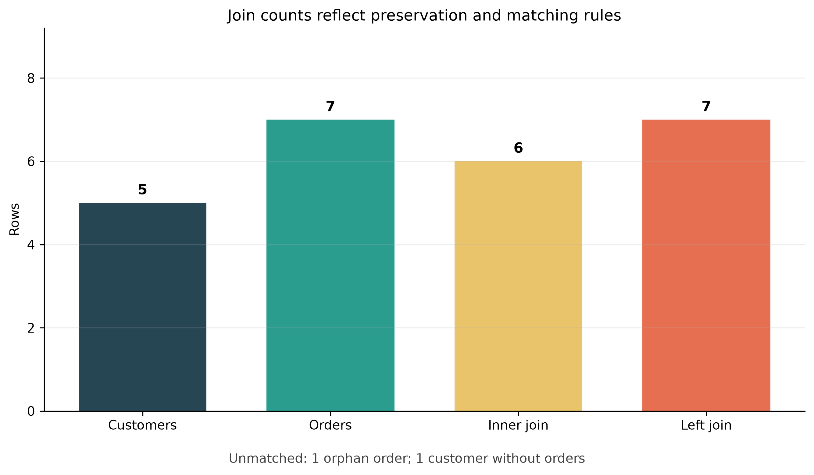

Joins and Relational Thinking
Learning objectives
By the end of this chapter, you will be able to:
- explain why related facts are stored in separate tables;
- identify table grain, primary keys, and foreign keys before joining;
- use
INNER,LEFT,RIGHT,FULL OUTER,CROSS, and self joins appropriately; - reason about one-to-one, one-to-many, and many-to-many relationships;
- prevent accidental row multiplication with pre-aggregation and bridge tables;
- detect unmatched keys, duplicate keys, and null-related join failures; and
- validate join outputs with counts, assertions, and reconciliation queries.
From isolated tables to relational questions
A relational database separates entities and events into tables that can be connected through keys. A customer table stores one row per customer. An order table stores one row per order. An order-item table stores one row per product line within an order. This separation avoids repeating customer attributes on every transaction and makes each table responsible for one kind of fact.
The analytical question usually spans those boundaries:
Which customers ordered, what did they buy, and how much revenue did each customer generate?
Answering it correctly requires more than knowing the JOIN keyword. It requires relational thinking: define what one row represents, identify the relationship between tables, predict the expected output grain, and verify the result.
The executable Chapter 04 workflow creates a small SQLite database, runs diagnostic and analytical joins, and saves reproducible outputs:
bash scripts/bash/04-run-join-analysis.shThe Python script uses only the standard library and matplotlib. It writes tables under results/tables/ and the diagnostic figure under results/figures/.
Begin with table grain
The grain states what one row represents. State it before writing a join.
| Table | Grain | Candidate key |
|---|---|---|
customers |
One row per customer | customer_id |
orders |
One row per order | order_id |
order_items |
One row per product line in an order | (order_id, product_id) |
products |
One row per product | product_id |
If customers is joined to orders, the natural output grain becomes one row per order, with customer attributes repeated for customers who placed multiple orders. If orders is then joined to order_items, the grain becomes one row per order line. The row count can increase without any duplication error: the data is simply being expressed at a finer grain.
After a valid one-to-many join, values from the “one” side repeat. Removing those rows with DISTINCT can discard legitimate events. Diagnose the relationship and intended grain instead of hiding unexpected counts.
Keys define relationships
A primary key uniquely identifies a row in its table. A foreign key references a key in another table. Together they express both identity and relationship.
CREATE TABLE customers (
customer_id INTEGER PRIMARY KEY,
customer_name TEXT NOT NULL,
region TEXT NOT NULL
);
CREATE TABLE orders (
order_id INTEGER PRIMARY KEY,
customer_id INTEGER,
order_date TEXT NOT NULL,
status TEXT NOT NULL,
FOREIGN KEY (customer_id) REFERENCES customers(customer_id)
);A nullable foreign key can be intentional, but it changes join behaviour. SQL’s equality comparison does not treat NULL as equal to another NULL. Missing keys therefore require explicit investigation rather than an assumption that they will match.
Join anatomy and aliases
The essential join pattern names the left table, the right table, and the condition that relates their rows:
SELECT
o.order_id,
o.order_date,
c.customer_name,
c.region
FROM orders AS o
JOIN customers AS c
ON o.customer_id = c.customer_id;Aliases keep multi-table queries readable and make column ownership explicit. Qualify shared names such as customer_id, and select the columns required by the output contract instead of relying on SELECT *.
Inner joins: retain matches
An INNER JOIN returns rows whose join condition matches on both sides. INNER is optional, so JOIN and INNER JOIN mean the same thing.
SELECT
c.customer_id,
c.customer_name,
o.order_id,
o.order_date
FROM customers AS c
INNER JOIN orders AS o
ON c.customer_id = o.customer_id
ORDER BY c.customer_id, o.order_date;This is appropriate when the analysis requires a valid relationship on both sides. It is not appropriate when customers without orders must remain visible. An inner join can silently remove unmatched records, so count them separately.
Left joins: preserve the analytical population
A LEFT JOIN retains every row from the left table and fills right-side columns with NULL when no match exists.
SELECT
c.customer_id,
c.customer_name,
COUNT(o.order_id) AS order_count
FROM customers AS c
LEFT JOIN orders AS o
ON c.customer_id = o.customer_id
GROUP BY c.customer_id, c.customer_name
ORDER BY c.customer_id;The placement of filters matters. Suppose cancelled orders should not count, but customers with no qualifying orders must remain:
SELECT
c.customer_id,
COUNT(o.order_id) AS completed_orders
FROM customers AS c
LEFT JOIN orders AS o
ON c.customer_id = o.customer_id
AND o.status = 'completed'
GROUP BY c.customer_id;Putting o.status = 'completed' in a WHERE clause would reject the null-filled rows and effectively convert the outer join into an inner join.
Use COUNT(o.order_id), not COUNT(*), when measuring matches. COUNT(*) counts the preserved customer row even when no order matched.
Right and full outer joins
A RIGHT JOIN preserves every row from the right table. It can often be rewritten as a LEFT JOIN by swapping table order. A FULL OUTER JOIN preserves matched rows plus unmatched rows from both sides.
SELECT
c.customer_id,
c.customer_name,
o.order_id
FROM customers AS c
FULL OUTER JOIN orders AS o
ON c.customer_id = o.customer_id;These joins are useful for reconciliation: records present only in the source, only in the target, or in both. Database support varies by engine and version, so confirm the dialect used by the project. A portable reconciliation can be built from left anti-joins and UNION ALL.
Anti-joins and semi-joins
An anti-join returns left-side rows with no match. It is a powerful data quality diagnostic.
SELECT o.*
FROM orders AS o
LEFT JOIN customers AS c
ON o.customer_id = c.customer_id
WHERE c.customer_id IS NULL;NOT EXISTS expresses the same intention directly and behaves safely when the comparison table contains nulls:
SELECT o.*
FROM orders AS o
WHERE NOT EXISTS (
SELECT 1
FROM customers AS c
WHERE c.customer_id = o.customer_id
);A semi-join returns left-side rows for which a match exists, without adding right-side columns or multiplying the left rows:
SELECT c.*
FROM customers AS c
WHERE EXISTS (
SELECT 1
FROM orders AS o
WHERE o.customer_id = c.customer_id
);Prefer EXISTS when the question is simply whether a related record exists.
Join cardinality
Cardinality describes how many rows on one side may relate to a row on the other side.
| Relationship | Meaning | Expected row-count behaviour |
|---|---|---|
| One-to-one | Each key appears at most once on both sides | At most one output row per matched key |
| One-to-many | A unique parent key relates to many child rows | Parent attributes repeat at child grain |
| Many-to-one | Many left rows relate to one unique lookup row | Left row count is preserved for complete matches |
| Many-to-many | Keys repeat on both sides | Rows multiply within each shared key |
Inspect key uniqueness before joining:
SELECT customer_id, COUNT(*) AS rows_per_key
FROM customers
GROUP BY customer_id
HAVING COUNT(*) > 1;Run the equivalent check on both inputs. If the join key repeats on both sides, the number of rows for a key is the product of the two group sizes. Three left rows joined to four right rows produce twelve rows for that key.
Many-to-many relationships need an explicit model
Orders and products form a valid many-to-many relationship: one order can contain many products, and one product can appear in many orders. A bridge table resolves the relationship:
orders 1 ----< order_items >---- 1 productsorder_items has its own grain and measures such as quantity and unit price.
SELECT
oi.order_id,
p.product_name,
oi.quantity,
oi.quantity * oi.unit_price AS line_revenue
FROM order_items AS oi
JOIN products AS p
ON oi.product_id = p.product_id;Do not join orders directly to products on a non-key descriptive field. Use the bridge that records which product participated in which order.
Aggregate at the intended grain
To calculate one row per customer, first compute order totals at the order grain, then aggregate them to the customer grain:
WITH order_totals AS (
SELECT
o.order_id,
o.customer_id,
SUM(oi.quantity * oi.unit_price) AS order_revenue
FROM orders AS o
JOIN order_items AS oi
ON o.order_id = oi.order_id
WHERE o.status = 'completed'
GROUP BY o.order_id, o.customer_id
)
SELECT
c.customer_id,
c.customer_name,
COUNT(ot.order_id) AS completed_orders,
COALESCE(SUM(ot.order_revenue), 0) AS revenue
FROM customers AS c
LEFT JOIN order_totals AS ot
ON c.customer_id = ot.customer_id
GROUP BY c.customer_id, c.customer_name
ORDER BY revenue DESC;Pre-aggregation prevents measures stored at different grains from being counted more than once. Always ask which table owns each measure and at what grain it is valid.
Composite keys and multi-column conditions
Some relationships require more than one column. A daily price table, for example, may be unique by product and effective date:
SELECT s.sale_id, s.product_id, s.sale_date, p.price
FROM sales AS s
JOIN daily_prices AS p
ON s.product_id = p.product_id
AND s.sale_date = p.effective_date;Joining only on product_id would match every sale to every historical price for that product. The complete key must appear in the join condition.
Self joins
A self join relates rows within one table. An employee hierarchy can connect each employee to their manager:
SELECT
e.employee_name,
m.employee_name AS manager_name
FROM employees AS e
LEFT JOIN employees AS m
ON e.manager_id = m.employee_id;Distinct aliases are essential because the same table plays two roles.
Cross joins
A CROSS JOIN returns every combination of rows. If the left table contains five rows and the right contains four, the result contains twenty rows.
SELECT d.calendar_date, r.region
FROM calendar_dates AS d
CROSS JOIN regions AS r;This is useful for constructing a complete date-by-region reporting grid. It is dangerous when produced accidentally by omitting or weakening a join condition.
Nulls and join keys
Because NULL = NULL is unknown rather than true, null keys do not match under ordinary equality. Profile them before the join:
SELECT
COUNT(*) AS total_rows,
SUM(CASE WHEN customer_id IS NULL THEN 1 ELSE 0 END) AS null_keys
FROM orders;Do not replace missing identifiers with a shared sentinel merely to force a match. Doing so can connect unrelated records. If a business-approved unknown member is required in a dimensional model, implement and document it explicitly.
Validate every important join
A reliable join makes its expectations executable.
1. Record input counts
SELECT COUNT(*) FROM customers;
SELECT COUNT(*) FROM orders;2. Test uniqueness on the expected one side
SELECT COUNT(*) AS rows,
COUNT(DISTINCT customer_id) AS distinct_keys
FROM customers;3. Count null and unmatched keys
SELECT COUNT(*) AS unmatched_orders
FROM orders AS o
WHERE NOT EXISTS (
SELECT 1 FROM customers AS c
WHERE c.customer_id = o.customer_id
);4. Compare output counts with the predicted cardinality
For a many-to-one lookup join with complete foreign keys and a unique lookup key, the joined row count should equal the left row count. A different count is evidence to investigate.
5. Reconcile measures
If joining should not change a measure’s grain, compare totals before and after:
WITH before_join AS (
SELECT SUM(quantity * unit_price) AS revenue FROM order_items
),
after_join AS (
SELECT SUM(oi.quantity * oi.unit_price) AS revenue
FROM order_items AS oi
JOIN products AS p ON oi.product_id = p.product_id
)
SELECT before_join.revenue AS before_revenue,
after_join.revenue AS after_revenue
FROM before_join CROSS JOIN after_join;6. Inspect representative records
Review matched, left-only, right-only, high-frequency, and null-key examples. Aggregate checks can pass while individual records are incorrectly connected.
Reading the diagnostic figure
The Chapter 04 script deliberately includes one orphan order and one customer without an order. It compares input row counts with the result of inner and left joins.

The figure is not a universal expected pattern. It is an audit aid: observed counts must be interpreted against the declared relationship and preservation rule.
Common join failures
| Failure | Symptom | Better practice |
|---|---|---|
| Joining before declaring grain | Unexpected repetitions | Write one-row-per-table statements first |
| Incomplete composite key | Large row multiplication | Join on the complete relationship key |
| Duplicate lookup keys | Left rows unexpectedly multiply | Assert uniqueness before the join |
Filtering an outer-joined table in WHERE |
Unmatched left rows disappear | Put match qualification in ON |
Using DISTINCT as a repair |
Real events may be discarded | Fix cardinality or aggregation logic |
Counting * after a left join |
Zero-match groups appear to have one | Count a nullable right-side key |
NOT IN with nulls |
Anti-join returns surprising results | Prefer NOT EXISTS |
| Joining on names or labels | False matches and missed variants | Use stable identifiers |
| Summing after a finer-grain join | Measures are overstated | Pre-aggregate at the measure’s grain |
Reusable join checklist
Before accepting a join, confirm that you can answer yes to each question:
- Is the grain of every input table documented?
- Is the expected output grain documented?
- Are the join columns the complete keys for the relationship?
- Is the intended cardinality known?
- Have uniqueness and null-key assumptions been tested?
- Is the correct population preserved by the join type?
- Are unmatched rows measured and explained?
- Are row counts consistent with the expected relationship?
- Are important measures reconciled before and after the join?
- Have representative matched and unmatched records been inspected?
Practice exercises
- Modify the customer summary to report completed and cancelled orders in separate columns while retaining customers with no orders.
- Write an anti-join that returns products never purchased.
- Add a duplicate
customer_idto a temporary lookup table. Predict and then measure how it changes the order join. - Create a calendar-by-region grid with
CROSS JOIN, then left join daily sales so missing combinations appear with zero revenue. - Reconcile total completed revenue at the order-item grain and customer grain.
- Explain why
SELECT DISTINCTis not a safe fix for an unintended many-to-many join.
Summary
Joins are where database structure becomes analytical meaning. Correct syntax is necessary, but reliable results depend on stronger habits: declare grain, use stable and complete keys, predict cardinality, preserve the intended population, aggregate measures at their valid grain, and validate the result.
The next chapter applies the same relational discipline to database design and normalization, showing how schemas can prevent many join problems before a query is written.